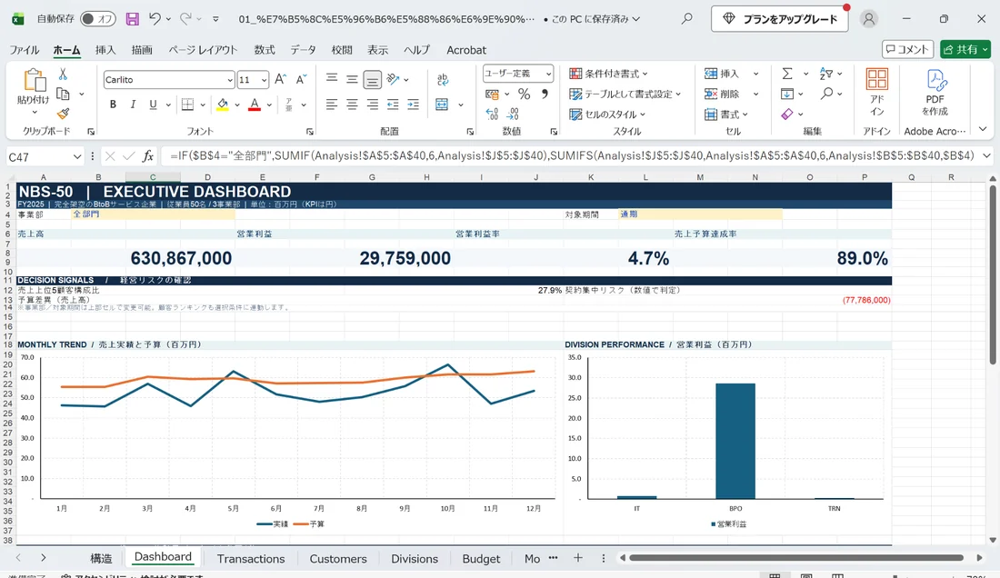

何を試したかったか
普段から行っている「情報整理→仮説→追加の深掘り」というAIの使い方を、数値の可視化に応用できるか試しました。
内容・構成
架空の年間608件の取引データを使用し、部門別・月別の売上や利益、予算達成率などを分析できるExcelを生成しました。部門切替、計算値と費用配賦の整合性を確認しています。
今回のサンプルの範囲
取引・顧客・部門はすべて架空です。分析結果は実在企業の経営状況を示しません。

普段から行っている「情報整理→仮説→追加の深掘り」というAIの使い方を、数値の可視化に応用できるか試しました。
架空の年間608件の取引データを使用し、部門別・月別の売上や利益、予算達成率などを分析できるExcelを生成しました。部門切替、計算値と費用配賦の整合性を確認しています。
取引・顧客・部門はすべて架空です。分析結果は実在企業の経営状況を示しません。